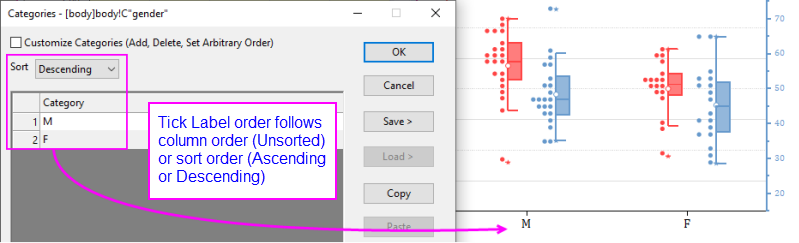

FAQ-124 Wie ändere ich die Reihenfolge von Hilfsstrichsbeschriftungen des kategorialen Diagramms?
Change-Order-of-Tick-Labels
Letztes Update: 06.04.2020
Wenn ein Diagramm aus kategorialen Daten gezeichnet wird (wenn Sie mit der rechten Maustaste auf die ausgewählte Datenspalte klicken, befindet sich ein Häkchen neben Als kategorisch setzen), wird der kategoriale Index von der Reihenfolge der Kategorien zugewiesen, die in der Spalte aufgelistet sind (d. h. der ersten angezeigten Kategorie wird ein Kategorienindex von 1 zugewiesen, der nächsten auftretenden Kategorie wird ein Index von 2 zugewiesen usw. Dies ist eine "unsortierte" Liste der Kategorien.
- 
Alternativ können Sie Kategorien in aufsteigender bzw. absteigender Reihenfolge sortieren, wodurch die Art und Weise, wie Kategorienindizes zugewiesen werden, geändert wird; oder Sie können Kategorien auf beliebige Weise sortieren, wobei Sie eine benutzerdefinierte Sortierungsreihenfolge erstellen.
Um die Sortierungsreihenfolge der Kategorien zu ändern, können Sie:
- Klicken Sie mit der rechten Maustaste auf die Datenspalte und stellen Sie sicher, dass Als kategorisch setzen im Kontextmenü gewählt ist. Oder markieren Sie die Spalte und klicken Sie auf die Schaltfläche Kategorial der Minisymbolleiste.
- Klicken Sie doppelt auf die Spaltenbeschriftungszeile Kategorien, um den Dialog Kategorien zu öffnen.
- Wählen Sie in der Auswahlliste Sortieren die Option Aufsteigend oder Absteigend.
- Zur weiteren benutzerdefinierten Anpassung der Kategorieeinträge aktivieren Sie das Kontrollkästchen Kategorien benutzerdefiniert anpassen (Hinzufügen, Löschen, Beliebige Reihenfolge festlegen), um eine benutzerdefinierte Reihenfolge für die Kategorien zu bestimmen.
 |
Seit Origin 2020b können Sie zwischen der Anzeige von kategorie und Kategorienindex in der Arbeitsblattspalte hin- und herschalten, indem Sie auf die Schaltfläche Kategorienindizes zeigen auf der Minisymbolleiste des Arbeitsblatts auf Seitenebene klicken.
|
Schlüsselwörter:kategorisch, sortieren, Hilfsstrichsbeschriftungen, alphabetisch, Reihenfolge
Origin-Version mind. erforderlich: 2015 SR0